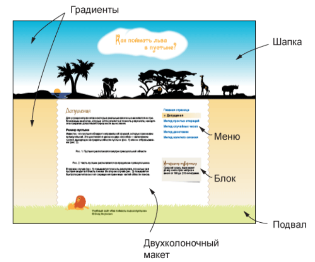

Щоб отримати детальне уявлення про верстку на HTML5, пройдемо весь процес роботи, починаючи з отримання графічного макета і закінчуючи публікацією сайту. Як приклад зверстаємо сторінки сайту lionindesert.ru, представлені на рис.
а. Головна сторінка сайту
б. Внутрішня сторінка
Дизайнер підготував макети в програмі Adobe Illustrator і одночасно експортував їх у формат PSD (Adobe Photoshop), тому всі необхідні початкові зображення у нас є. Тут треба врахувати, що верстка це процес творчий і, можливо, кілька рішень одного завдання, тому з графікою доведеться працювати активно, готуючи зображення під своє рішення. Один великий PSD-файл треба перетворити на набір невеликих малюнків, які виводитимуться у браузері з використанням HTML та CSS. Припускаємо, що верстальник володіє програмою Photoshop і може в ній виконати якісь типові дії на кшталт вирізування фрагмента картинки та збереження його у відповідному для Інтернету форматі. Або верстальник працює в парі з дизайнером і чітко вказує йому, що треба отримати.
Для систематизації роботи розіб'ємо її на ряд завдань за видом макета. Але і так добре помітно, що сторінка ділиться на три головні групи: шапка, основна частина, де розміщується весь контент та підвал. "Шапка" і "підвал" це жаргонні вирази для позначення заголовка сторінки та її нижньої частини. Також застосовуються терміни «хедер» та «футер», які є калькою з англійських слів header та footer.
Завдання для верстки